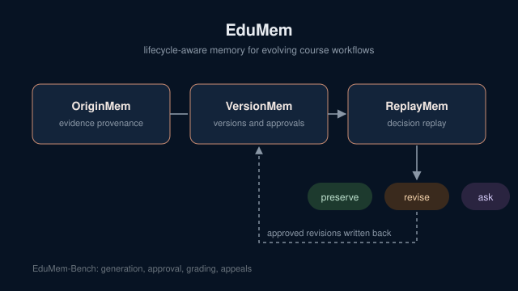

EduMem
Maintaining Instructional Decision Validity Across Evolving Course Workflows

Abstract
Large language model agents increasingly support teaching workflows where instructional knowledge evolves through instructor interactions and AI-generated artifacts. Existing agent memory systems address temporal updates, provenance and dependency-aware repair, but their ability to maintain instructional decision validity across an entire course lifecycle remains underexplored.
We propose EduMem, a lifecycle-aware memory framework that connects instructional evidence, evolving artifacts and authorized decisions. OriginMem traces instructional artifacts to their supporting evidence, while VersionMem maintains their evolving versions, instructor approvals and temporal applicability. Building on both, ReplayMem reconstructs historical decision contexts and evaluates their continued validity when instructional knowledge changes, preserving justified decisions, identifying necessary revisions, or requesting instructor clarification when evidence or authorization is insufficient. Approved revisions are incorporated back into versioned memory, enabling continuous maintenance across instructional workflows.
We further introduce EduMem-Bench, a longitudinal benchmark spanning artifact generation, approval, grading and appeals, to evaluate historical consistency, pedagogical alignment, authorization compliance and selective revision against existing agent memory approaches.
The problem
Available knowledge is not decision-relevant knowledge
A course is not static. Instructors revise materials, approve generated artifacts and make decisions that affect students, so a teaching agent needs more than a searchable store of course information. It has to know how that knowledge evolved and when it applies.
An uploaded document may not reflect what was actually taught in class.
An AI-generated assessment does not automatically become an official course artifact.
An approved rubric may govern grading without becoming evidence for unrelated tasks.
These distinctions compound as artifacts are revised. Approving one version does not authorize later edits, and a change in requirements does not automatically invalidate earlier decisions. EduMem separates three questions that existing memory systems collapse into one:
Historical justification
Was the decision supported by applicable evidence when it was made?
Current applicability
Is it still appropriate for future use after the course has changed?
Authorization to revise
Even when an outcome warrants reconsideration, is the agent allowed to change it, or must the instructor decide?
Method
Three complementary memories
Evidence provenance
Distinguishes original instructional sources from generated knowledge and records how every artifact relates to the evidence that supports it.
Versions and approvals
Represents each artifact's evolving versions alongside the instructor approvals and the period for which each version applies.
Decision replay
Reconstructs the context of past decisions and reasons about consequences: preserve what is still justified, revise what must change, or ask the instructor.
Identifying outdated information is different from deciding whether a previously authorized decision is still justified.
Prior work distinguishes current from historical memory, propagates validity through provenance, and selectively repairs affected memories. EduMem builds on these ideas but evaluates the downstream decisions made from memory: whether a grade, a quiz or a piece of feedback remains justified under its evidence and authorization conditions.
Evaluation
EduMem-Bench
Conventional memory benchmarks ask whether an agent can answer a question about the past. EduMem-Bench follows a course over time and asks whether the agent keeps its decisions valid as evidence and artifacts change under controlled edits.
Artifact generation, instructor approval, grading and appeals.
Historical consistency, pedagogical alignment, authorization compliance and selective revision.
Comparisons with temporal memory, provenance-aware repair and authorization-aware approaches will test whether lifecycle-aware decision reasoning helps beyond conventional memory maintenance.
This is work in progress. Results will be added here when the paper is released.
Contributions
What this work adds
A new problem formulation
Instructional decision validity as a long-horizon agent memory problem, separating historical justification, current applicability and authorization to revise consequential outcomes.
EduMem
A lifecycle-aware memory framework that combines evidence provenance and version-aware authorization with historical decision reconstruction and consequence-aware reasoning.
EduMem-Bench
A longitudinal evaluation framework for decision consistency and selective revision across evolving instructional workflows.
More research